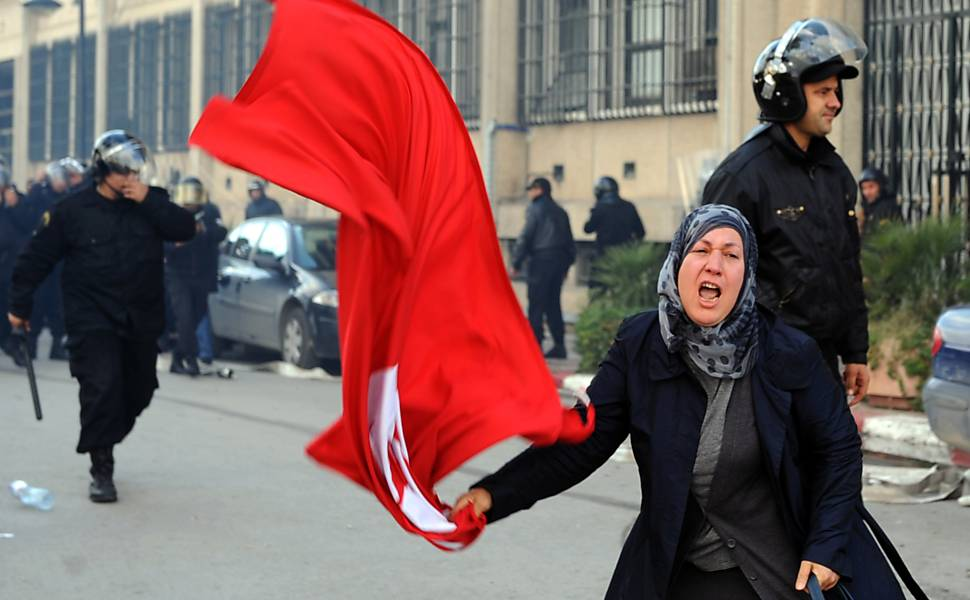

Primavera árabe

Fonte: https://aulazen.com/historia/primavera-arabe-origem-fatos-e-consequencias-resumo/
O que foi
A partir do final de 2010, países do Oriente Médio e do norte da áfrica passaram por uma série de rebeliões cujas consequências são observadas até hoje. Populações de países como Tunísia, Líbia, Egito, entre outros, saíram às ruas para PROTESTAR CONTRA GOVERNOS AUTOCRáTICOS E AS PéSSIMAS CONDIçõES SOCIOECONôMICAS QUE ENFRENTAVAM: pobreza, falta de serviços públicos e desemprego, sobretudo entre os mais jovens. Essa série de eventos ficou conhecida pelo nome de Primavera árabe.
O termo “Primavera” sugeria o florescer das democracias populares, em alusão à Primavera dos Povos, no final do século XVIII, e à Primavera de Praga, em 1968. O diferencial foi que as mobilizações organizadas dessa vez se apoiaram fortemente no uso de redes sociais e, assim, conseguiram superar a censura dos governos repressivos e não só expandir as manifestações, mas torná-las visíveis ao restante do mundo.
Como resultado, essas revoltas populares derrubaram ditaduras que duravam décadas na região, como a da Tunísia.
Causas
De modo geral, as exigências populares são voltadas para a melhora da qualidade de vida e pela liberdade de expressão. As revoltas foram motivadas principalmente pela corrupção dos governos autoritários da região, pelos altos índices de desemprego e pela tirania.
A maioria dos governos nos países que passaram pela Primavera árabe eram regimes opressores, em que o poder e a riqueza ficam condensados nas mãos de uma única família. Diante da crise financeira e da repressão, a população necessitava apenas de um estopim para as manifestações explodirem.
Estopim
Tudo começou com Mohamed Bouazizi, um ambulante tunisiano de 26 anos na pequena cidade de Sidi Bouzid, onde era constantemente intimidado por policiais por causa da ilegalidade de seu trabalho, problemas com seus produtos e pedidos de suborno.
Na data de 17 de dezembro de 2010, em novo caso de intimidação, policiais confiscaram seu carrinho de frutas por ele não ter licença para vender no local onde alegadamente era necessária.
Bouazizi foi à sede do governo local reclamar e tentar recuperar seus pertences, mas foi ignorado. Sem conseguir mais trabalhar e afetado há anos pelo desemprego, a situação o deixou desesperado. Bouazizi comprou um galão de combustível, jogou o líquido sobre o corpo e, em frente ao prédio do governo, ateou fogo a si mesmo.[c]
[d]
Primavera árabe e as redes sociais
A morte do jovem de origem humilde poderia ter sido esquecida em meio ao caos das manifestações que estavam em andamento na Tunísia. Porém, com as mídias sociais o acontecimento ganhou repercussão e a indignação espalhou-se pela população e pelos países vizinhos.
Apesar das reivindicações populares serem parecidas em vários países, não há uma liderança unificada. As manifestações são organizadas pelo próprio povo por meio da internet. Esse é um dos motivos da durabilidade da Primavera árabe e um dos principais motivos pelo qual é tão complexo para os governos tentarem impedir o movimento.
Países da Primavera árabe
Bastou que as reivindicações da população tunisiana fossem espalhadas pelas redes para que as revoltas nos países árabes vizinhos também tomassem forma. Os países em que o movimento ocorreu foram:[e]
- Tunísia
- Egito
- Líbia
- Iêmen
- Argélia
- Síria
- Marrocos
- Omã
- Bahrein
- Jordânia
- Sudão
- Iraque

Fonte: https://www.todamateria.com.br/primavera-arabe/
A seguir está um resumo dos acontecimentos de cada país participante da Primavera árabe.
Tunísia
O presidente Zine el-Abidine Ben Ali estava comandando a Tunísia desde a década de 1980. Todavia, a revolta proveniente do suicídio de Mohammed Bouazizi foi tão grande que o forçou a sair do país no dia 14 de janeiro de 2011. O movimento que depôs o ditador também recebeu o nome de Revolução de Jasmim.
O país então passou pela transição política para um governo democrático e, em outubro do mesmo ano, foram realizadas as primeiras eleições livres da história da Tunísia. A revolução tunisiana foi um dos únicos movimentos da primavera árabe que obteve sucesso na transição para a democracia.
Egito
Uma das maiores revoltas da Primavera árabe aconteceu no Egito, para derrubar o ditador Hosni Mubarak. A ação também recebeu os nomes de Revolução de Lótus, Dias de Fúria e Revolução do Nilo.
Mubarak tornou-se o segundo presidente derrubado pela Primavera árabe diante do clamor popular em 11 de fevereiro de 2011. Mohamed Morsi foi eleito no ano seguinte, mas em pouco tempo demonstrou tendências despóticas e foi forçado a se retirar pelas Forças Armadas do país, em 2013.
Atualmente, o Egito é governado por Abdul Fatah Khalil Al-Sisi, ex-comandante do Exército, que foi o primeiro presidente eleito democraticamente do país. Ele já está em seu segundo mandato e continuará no poder até 2030 de acordo com a recente reforma constitucional. A opinião sobre o presidente é controversa, e a população experimenta crise econômica e repressão política.
Líbia
A Líbia estava há 42 anos sob o comando de Muammar al-Gaddafi, quando a Primavera árabe chegou ao país. A revolução resultou em uma violenta guerra civil entre apoiadores e opositores do governo de Gaddafi.
O conflito foi tão grande que os Estados Unidos autorizaram a atuação da Organização do Tratado do Atlântico Norte (OTAN) na Líbia. Por fim, Gaddafi foi capturado e morto pela oposição de seu governo em outubro de 2011.
longe de instaurar um regime democrático, a Revolução da Líbia deixou um saldo de milhares de mortos nos seis meses de conflitos. Sem um governo central, o país foi dividido em várias facções que estão em constante atrito até hoje, para o prejuízo da população.
Iêmen
No Iêmen, os protestos também tomaram as ruas em 2011 e foram duramente reprimidos pelo governo de Ali Abdullah Saleh. No entanto, o conflito não tomou grandes proporções por conta da intervenção da Arábia Saudita, que negociou a transição de governo para o vice de Saleh.
Desde então, o país enfrenta constantes conflitos entre as facções étnicas e religiosas, além de ataques de organizações terroristas. A arábia saudita interfere ativamente nas guerras da região, sendo que o episódio mais emblemático aconteceu em 2015, com a revolta dos Hutis, minoria xiita do Iêmen. O ex-presidente Saleh faleceu pouco tempo depois, em dezembro de 2017.
Argélia
Em 2011, milhares de pessoas tomaram o centro de Argel aos gritos de "não à polícia" e "fora Bouteflika", uma referência ao mandatário argeliano, Abdelaziz Bouteflika (1937), que está no poder desde 1999.
O governo reprimiu duramente as manifestações com a prisão dos líderes opositores. Estas manifestações não causaram grandes mudanças no país.
O estado de emergência que vigorava no país há 19 anos foi removido, mas isso não significa que tudo se acalmou pacificamente. Os protestos continuam, visto que o líder do governo que a população pretendia depor, Bouteflika, ganhou as eleições e permanece no poder (e há iminência de uma Primavera árabe 2.0 na Argélia, devido à intenção do presidente de continuar no poder pelo quinto mandato seguido).
Síria
Os protestos na Síria tiveram início em 2011 e desencadearam numa violenta uma guerra civil que é apoiada tanto pelos países ocidentais, quanto a Rússia e, ainda, o Estado Islâmico.
Os sírios lutam pela deposição do ditador Bashar al-Assad (1965), que governa a Síria há mais de quatro décadas, e essa luta permanece até os dias de hoje.
Nesse país, porém, os manifestos têm atingido proporções acima do esperado, que se revelam nas suas graves consequências. Trata-se da utilização de armas químicas e biológicas utilizadas no combate pelo governo sírio. Os números apontam para milhares de mortos e um milhão de refugiados.
Marrocos
A Primavera árabe também ocorreu no Marrocos. Porém, diferentemente dos demais, ele não possui a exigência, ao menos por enquanto, do fim do poder do Rei Mohammed VI, mas sim da diminuição de seus poderes e atribuições.
O rei marroquino, mediante os protestos, chegou a atender partes das exigências, diminuindo parte de seu poderio e, inclusive, nomeando eleições para Primeiro-Ministro. Entretanto, os seus poderes continuam amplos e a insatisfação no país ainda é grande.
Omã
Assim como no Marrocos, em Omã não há a exigência do fim do regime monárquico do sultão Qaboos bin Said que impera sobre o país, mas sim a luta por melhores condições de vida, reforma política e aumento de salários. Em virtude do temor do alastramento da Primavera árabe, o sultão definiu a realização das primeiras eleições municipais em 2012.
O sultão vem controlando a situação de revolta da população do país através de benesses e favores à população. Apesar disso, vários protestos e greves gerais já foram registradas desde 2011.
Bahrein
Os protestos no Bahrein objetivam a derrubada do rei Hamad bin Isa al-Khalifa, no poder há oito anos. Os protestos também se iniciaram em 2011 sob a influência direta dos efeitos da Revolução de Jasmim.
O governo responde com violência aos rebeldes, que já tentaram atacar, inclusive, o Grande Prêmio da Fórmula 1. Registros indicam centenas de mortos durante combates com a polícia.
Jordânia
A Jordânia foi um dos últimos países, até o momento, a sofrer as influências da Primavera árabe. Revoltas e protestos vêm ocorrendo desde a segunda metade de 2012, com o objetivo de derrubar o governo do Rei Abdullah II, que, com receio da intensificação da Primavera árabe em seu país, anunciou no início de 2013 a realização de novas eleições.
Entretanto, o partido mais popular do país, a Irmandade Muçulmana, decidiu pelo boicote desse processo eleitoral diante das frequentes denúncias e casos comprovados de fraudes e compras de votos.
Iraque
Os Protestos no Iraque em 2011 são protestos que ocorreram em várias cidades do Iraque, e que, também, são considerados como partes restantes da Guerra do Iraque. As manifestações eram contra a corrupção, a falta de serviços básicos e o desemprego.
Entretanto, cabe ressaltar, que as manifestações, diferentemente do que ocorreu no Egito e na Tunísia, não demandavam, essencialmente, a derrubada do governo, senão o fim da corrupção e melhorias nos serviços públicos. As manifestações possuíram, também, caráter menos violento se comparadas às manifestações egípcia e tunisiana.
Apesar do caráter pouco violento das manifestações, a resposta, dada por Nouri al-Maliki não foi pacífica. O Primeiro Ministro agiu de modo a minar os movimentos se utilizando de duas vias: a primeira tentou abalar a atmosfera de unidade a partir de ameaças de uso de violência; e, a segunda, se manifestou por meio do uso efetivo da força. Assim, destarte os esforços de parte dos manifestantes de modo a conter os abalos na unidade dos movimentos, a propaganda do medo e o uso da força minaram a força das manifestações. E, a partir dessas desvantagens, impediu-se que a narrativa de (re)conciliação nacional fosse realizada.
Consequências da Primavera árabe
Como efeito positivo pode-se citar a reestruturação política de alguns países, como a Tunísia, e o fato de que a situação do mundo árabe ganhou a atenção internacional após os conflitos. No entanto, a violência desencadeada foi responsável por muitas mortes e ondas de REFUGIADOS[g]. Além disso, vários desses países ainda lutam contra a crise econômica e as guerras civis decorrentes da Primavera árabe.
Com exceção da Tunísia, que realizou e respeitou eleições democráticas, nos demais países que passaram pela Primavera, governos teocráticos autoritários foram depostos e substituídos por governos de coalizão, antidemocráticos, militarizados e nocivos à auto-organização dos povos e à soberania dessas nações. Enfatiza-se que esses países são ricos em petróleo[h] e/ou localizados em rotas estratégicas entre o Mediterrâneo e o Mar Vermelho.
A Primavera árabe também desencadeou guerras civis de grandes proporções em países como a Síria, Líbia e Iêmen[i], algumas das quais estão ativas até hoje. No Egito, houve uma tentativa frustrada de democracia, além do avanço brutal do Estado Islâmico, atualmente enfraquecido, porém ainda atuante.
Além disso, as guerras acabaram produzindo um grande número de refugiados, que se arriscam em rotas perigosas em busca de um lugar melhor para viver, sobretudo na Europa, mas também em países como o Brasil.
Os especialistas [j]ressaltam a importância da Primavera árabe por ter sido um ato supostamente “isolado” que desencadeou protestos de grande proporção que, uma década depois, ainda produzem efeitos.